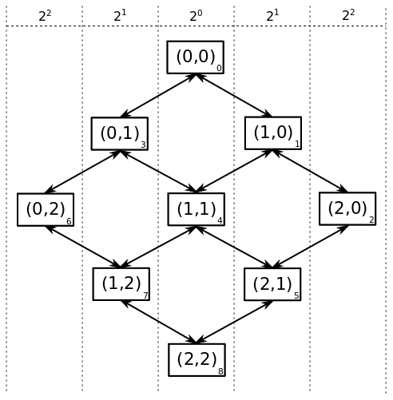

I think I need to note that following has not been peer reviewed in anyway shape or form so is liable to contain egregious errors. For instance in the first couple paragraphs I realize that I'm solving a problem which probably does not need solving. Still I think my results for this work, though in search of a problem to solve are interesting.
I needed to generate mazes for a project. I wanted to generate mazes of size $n$ ranging from $n=10$ to about $n=100$. Simple problem right, get a grid and start dropping walls. Wrong! It turns out that a maze where every location is accessible and there are no loops is equivalent to a spanning tree. A spanning tree is a path which visits every node in a graph exactly once without any cycles. Spanning trees appear some path finding algorithms but are interesting mathematical objects in their own right.
Although I have a background in graph theory, spanning trees were not my first thought when it came to maze generation, instead I thought of a random walk, a simple random walk to be specific. In a simple random walk given the walks current location you move with equal probability to every adjacent space or node, and the process repeats possibly forever.
So say $n=5$ meaning our maze is a grid with $5$ spaces on each side and $25$ spaces in total. Also lets define the maze entrance to be at space $(0,0)$ and exit to be at $(4,4)$. This gives the grid below.
If the simple random walk is at space $(0,0)$ and diagonal moves are not allowed then it has $\frac{1}{2}$ probability of moving to space $(0,1)$ and $\frac{1}{2}$ probability of moving to space $(1,0)$. If the random walk is allowed to backtrack, i.e. if the random walk is at space $(0,1)$ it is allowed to return to space $(0,0)$ then the random walk will continue indefinitely eventually visiting every space. Therefore if the random walk starts in location $(0,0)$ and we terminate it when it reaches space $(4,4)$ we have a random path from space $(0,0)$ to $(4,4)$.
Of course this path may have loops and may either visit every space in our grid or only $9$ of the $25$ spaces. These are all potential problems with our generated maze but there is a more subtle problem. To see this ask assuming the random walk starts at $(0,0)$ and is not allowed to backtrack, what is the probability that on the second move the random walk arrives are space $(0,2)$? If the random walk arrives at space $(0,2)$ on the second move it had to be at space $(0,1)$ after the first move. So given that the probability of moving to space $(0,1)$ on the first move is $\frac{1}{2}$ and the given the random walk is at $(0,1)$ the probability of it moving to location $(0,2)$ is also $\frac{1}{2}$, the probability of arriving at space $(0,2)$ on the second move can be computed as follows, \begin{align} P((0,1)|(0,0)) &= \frac{1}{2}\\ P((0,2)|(0,1)) &= \frac{1}{2}\\ P((0,2)|(0,0)) &= P((0,1)|(0,0)) P((0,2)|(0,1)\\ &= \frac{1}{4} \end{align} Now ask what is the probability of arriving at space $(1,1)$ on the second move? Well its \begin{align} P((1,1)|(0,0)) &= P((0,1)|(0,0)) P((1,1)|(0,1) + P((1,0)|(0,0)) P((1,1)|(1,0)\\ &= \frac{1}{4} + \frac{1}{4}\\ &= \frac{1}{2} \end{align} In other words, the random walk is more likely to visit spaces along the diagonal then spaces along the edge of the grid. This is shown numerically in the two heatmaps below. These are generated from $1000$ random walks starting at $(0,0)$ and ending at $(7,7)$. The figure on the left counts all visits to a space and we see that the random walks spend most of their time near where they begin at space $(0,0)$. But since we are uninterested in repeated visits to a space in maze generation the right is more useful, it counts each time a space was visited at least once in each of the $1000$ random walks from $(0,0)$ to $(7,7)$. Here it is clear that nearly all random walks pass through the spaces along the diagonal from space $(0,0)$ to $(7,7)$ but only about half make it to spaces $(0,7)$ and $(7,0)$.
This is perhaps less of a problem then I initially thought. If we look at the left figure excluding the edges the probability of being in any space along a counter diagonal (diagonal right to left) is actually pretty uniform with the number of visits to a space being more of a function of distance from the end location $(7,7)$ then anything else. Also while only about half the random walks visit space $(0,7)$ and $(7,0)$ on a given walk, a random walk by definition does not necessarily visit every state or space.
So if your really only interested in maze generation a naive random walk will probably work just fine. But could we do better or at least change the characteristics of the random walk to change the texture of the resulting mazes which from the right figure would appear to be solvable by simply traversing the diagonal? I don't know, I mean how do we define "better" or the "texture" of a maze. But perhaps we can at least change the characteristics of the random walk which generates the maze.
To increase the chance of the random walk reaching the edges of the gird instead of using a simple random walk which moves to all adjacent squares with equal probability, I decided adjust the transition probabilities so that the random walk is more likely to visit edge spaces such as $(0,7)$ and $(7,0)$. If it is possible to find an exact solution to this problem such that the probability of visiting any square on the counter diagonal is equal using Markov chain theory I would really like to know how! Below I will go into two approaches I took to try finding an "exact" solution the second of which was more successful then the first. But generally being lazy, instead of pursuing an exact solution I first choose to try a rough approximation. The basic problem we observed above is that if we approximate the undirected graph the simple random walk traverses as a directed graph, the probability of visiting space $(1,1)$ at $m=2$ is twice that of visiting space $(0,2)$. The following figures show the true undirected graph on the left and my approximation of it with a directed graph on the right for $n=3$.
I decided to try a random walk biasing scheme that should push the random walk toward the edges of the maze. The figure below gives the bias scheme, bias $2^0=1$ for the diagonal nodes $(0,0)$, $(1,1)$, and $(2,2)$, bias of $2^1=2$ for $1$ step left and right of the diagonal, and generally $2^x$ for $x$ steps off the diagonal. More generally letting the tuple indexing each node be represented as $(i,j)$ we can compute $x$ as $x=abs(i-j)$ and therefore the bias at node $(i,j)$ is $b_{i,j}=2^{abs(i-j)}$.  These biases can be put into a transition matrix and then row normalized so the probability of leaving any space is $1$. In the transition matrix below $n=3$ and row and column labels correspond to the numbers in the lower left corners of the biasing figure above.
Running a random walk $1000$ times using this biasing scheme with a grid of size $n=8$ gives the following heatmaps. The one on the left counts all visits to a space and the one on the right just the first visit. In both its clear that the edge spaces are visited more often then in the case of the unbiased random walk, in fact the diagonal spaces are now less visited than the edge spaces.
Adding some additional ad-hoc techniques to fill out the maze with branches from solution path generated using the biased random walk technique described above gives an algorithm that can produce an arbitrarily sized maze such as the one shown below.
Sources:
$^{(1)}$ https://en.wikipedia.org/wiki/Spanning_tree
$^{(2)}$ https://en.wikipedia.org/wiki/Maze_generation_algorithm
$^{(3)}$http://www.astrolog.org/labyrnth/algrithm.htm
I mentioned that I had tried to find an exact solution for a biased transition matrix given a desired probability distribution of visiting each space in the grid. Well I'm not sure I have a general solution but I might have a specific one, which at least generates nice figures!
Say $n=3$, we have $9$ states, and we assume that the random walk starts at state $0$. Now lets look at how the probability of a simple random walk (left) vs my target probability (right) being in a given state changes with each step of the random walk.
Take away, first the probability of being in any given state under a simple random walk is not the same my target probability after step $2$. Second, notice that step $4$ of our target probability distribution has achieved "saturation" having reached all squares of the grid and simply oscillates between the distribution in step $3$ and $4$ for every step that follows.
I first tried to take a linear algebra approach to finding the transition matrices which would achieve my target distributions at each step. Lets define the grid state at $step=0$ as a vector $v_0$, the grid state at $step=1$ as $v_1$, and the grid state at $step=i$ as $v_i$. Each vector $v_i$ is straightforward to compute given $v_0$. The question is how to compute a transition matrix $T_{0,1}$ given vectors $v_0$ and $v_1$? This is simple to express, \begin{align} v_0 T_{0,1} &= v_1\\ T_{0,1} &= v_0^{-1}v_1 \end{align} Unfortunately the inverse of $v_0$ does not exist since it is not a square matrix. But since $v_0$ is a row matrix consisting of a single column it follows that its columns are linearly independent. Therefore $$ v_0^+v_0 = I $$ where $v_0^+$ is the Moore-Penrose inverse or pseudo-inverse and $I$ is the identity matrix. Therefore if $v_0^+$ is computable then \begin{align} v_0 T_{0,1} &= v_1\\ v_0^+ v_0 T_{0,1} &= v_0^{+}v_1\\ I T_{0,1} &= v_0^{+}v_1\\ T_{0,1} &= v_0^{+}v_1\\ \end{align} One can compute the Moore-Penrose inverse $v_0^+$ as \begin{equation} v_0^+ = v_0^T\left(v_0v_0^T\right)^{-1} \end{equation} Unfortunately since $v_{0}$ is at least half zeros it follows that $v_{0}v_{0}^T$ is singular and its inverse $\left(v_{0}v_{0}^T\right)^{-1}$ does not exist. However in the limit \begin{equation} v_{0}^+ = \lim_{\delta \to 0} \left( A^*A + \delta I \right)^{-1} A^* = \lim_{\delta \to 0} A^* \left( A^*A + \delta I \right)^{-1} \end{equation} which is the Tikonov Regularization. Where $A^*$ is the Hermitian transpose which reduced to a simple transpose of $A$ if it is real matrix and $\delta$ is an arbitrarily small number. So subbing in $v_0$ for $A$ gives \begin{equation} v_{0}^+ = \lim_{\delta \to 0} \left( v_0^Tv_0 + \delta I \right)^{-1} v_0^T \end{equation}
Given $v_0$ we can compute $v_1,v_2,\ldots,v_i$ and therefore have \begin{align} v_0^{+}v_1 &= T_{0,1}\\ v_1^{+}v_2 &= T_{1,2}\\ \ldots\\ v_{i-1}^{+}v_i &= T_{i-1,i} \end{align} Lastly I row normalize to $1$ the rows of the resulting transition matrices $T_{i-1,i}$.
Unfortunately this approach does not work, but not in they way I expected like $v_0T_{0,1}\neq v_1$. Lets take for example $i=4$ and we know \begin{align} v_3 &= \left[0,\frac{1}{4},0,\frac{1}{4},0,\frac{1}{4},0,\frac{1}{4},0\right]\\ v_4 &= \left[\frac{1}{5},0,\frac{1}{5},0,\frac{1}{5},0,\frac{1}{5},0,\frac{1}{5}\right]\\ \end{align} Now the algorithm above gives, \begin{align} T_{3,4} &= \left[ \begin{array}{ccccccccc} 0 &0 &0 &0 &0 &0 &0 &0 &0\\ \frac{1}{5} &0 &\frac{1}{5} &0 &\frac{1}{5} &0 &\frac{1}{5} &0 &\frac{1}{5}\\ 0 &0 &0 &0 &0 &0 &0 &0 &0\\ \frac{1}{5} &0 &\frac{1}{5} &0 &\frac{1}{5} &0 &\frac{1}{5} &0 &\frac{1}{5}\\ 0 &0 &0 &0 &0 &0 &0 &0 &0\\ \frac{1}{5} &0 &\frac{1}{5} &0 &\frac{1}{5} &0 &\frac{1}{5} &0 &\frac{1}{5}\\ 0 &0 &0 &0 &0 &0 &0 &0 &0\\ \frac{1}{5} &0 &\frac{1}{5} &0 &\frac{1}{5} &0 &\frac{1}{5} &0 &\frac{1}{5}\\ 0 &0 &0 &0 &0 &0 &0 &0 &0\\ \end{array} \right] \end{align} Clearly its true that, \begin{equation} v_3 T_{3,4} = v_4 \end{equation} However recall the grid the random walk is traversing,
I'm going to be a bit handwavy about this solution because I have not formalized it or tried to prove that it is correct. Its an algorithmic solution which given subsequent probability distributions of the possible locations on the random walk at time $v_i$ and $v_{i+1}$ computes the transition matrix T_{i,i+1}. For example lets take $i=3$ for $n=3$ such that, \begin{align} v_3 &= \left[0,\frac{1}{4},0,\frac{1}{4},0,\frac{1}{4},0,\frac{1}{4},0\right]\\ v_4 &= \left[\frac{1}{5},0,\frac{1}{5},0,\frac{1}{5},0,\frac{1}{5},0,\frac{1}{5}\right]\\ \end{align}
This implies that at time $i=3$ the random walk could be at the following locations $l_3=[1,3,5,7]$ and could transition to locations $l_4=[0,2,4,6,8]$. But given the restriction that the random walk only move one space along a vertical for horizontal access only the following transitions are possible. \begin{align} 1 \to [0,2,4]\\ 3 \to [0,4,6]\\ 5 \to [2,4,8]\\ 7 \to [4,6,8]\\ \end{align}
Marking these transitions in a transition matrix with $-1$ gives, \begin{align} T_{3,4} &= \left[ \begin{array}{ccccccccc} 0 &0 &0 &0 &0 &0 &0 &0 &0\\ -1 &0 &-1 &0 &-1 &0 &0 &0 &0\\ 0 &0 &0 &0 &0 &0 &0 &0 &0\\ -1 &0 &0 &0 &-1 &0 &-1 &0 &0\\ 0 &0 &0 &0 &0 &0 &0 &0 &0\\ 0 &0 &-1 &0 &-1 &0 &0 &0 &-1\\ 0 &0 &0 &0 &0 &0 &0 &0 &0\\ 0 &0 &0 &0 &-1 &0 &-1 &0 &-1\\ 0 &0 &0 &0 &0 &0 &0 &0 &0\\ \end{array} \right] \end{align}
Now first as a transition matrix after the transition values are filled in every row sum with non-zero elements should equal $1$ and every column sum should be \begin{equation} col\_sum_{i,i+1} = \frac{p_{i+1}}{p_i} \end{equation} where $p_i$ is the non-zero probability of being at a location at iteration $i$. So for $i=3$, \begin{equation} col\_sum_{3,4} = \frac{\frac{1}{5}}{\frac{1}{4}} = \frac{4}{5} \end{equation}
The algorithm then selects the column or row with preference for the columns with the fewest unset elements. If the current probability sum of a column is $col\_sum'=\frac{1}{2}$ and there are two unset elements, assign each element probability $\frac{1}{4}$. If assigning probability $\frac{1}{4}$ to one of these elements would violate a row sum assign that element probability $p'$such that the row sum equals $1$ and the rest of the probability $p'' = col\_sum - (col\_sum' + p')$ to the second element. The same basic procedure is followed in setting the transition probabilities in a row of the transition matrix.
For example filling in the columns with two unset elements gives \begin{align} T_{3,4} &= \left[ \begin{array}{ccccccccc} 0 &0 &0 &0 &0 &0 &0 &0 &0\\ \frac{2}{5} &0 &\frac{2}{5} &0 &-1 &0 &0 &0 &0\\ 0 &0 &0 &0 &0 &0 &0 &0 &0\\ \frac{2}{5} &0 &0 &0 &-1 &0 &\frac{2}{5} &0 &0\\ 0 &0 &0 &0 &0 &0 &0 &0 &0\\ 0 &0 &\frac{2}{5} &0 &-1 &0 &0 &0 &\frac{2}{5}\\ 0 &0 &0 &0 &0 &0 &0 &0 &0\\ 0 &0 &0 &0 &-1 &0 &\frac{2}{5} &0 &\frac{2}{5}\\ 0 &0 &0 &0 &0 &0 &0 &0 &0\\ \end{array} \right] \end{align} This forces the rest of the unset values to be $\frac{1}{5}$ giving, \begin{align} T_{3,4} &= \left[ \begin{array}{ccccccccc} 0 &0 &0 &0 &0 &0 &0 &0 &0\\ \frac{2}{5} &0 &\frac{2}{5} &0 &\frac{1}{5} &0 &0 &0 &0\\ 0 &0 &0 &0 &0 &0 &0 &0 &0\\ \frac{2}{5} &0 &0 &0 &\frac{1}{5} &0 &\frac{2}{5} &0 &0\\ 0 &0 &0 &0 &0 &0 &0 &0 &0\\ 0 &0 &\frac{2}{5} &0 &\frac{1}{5} &0 &0 &0 &\frac{2}{5}\\ 0 &0 &0 &0 &0 &0 &0 &0 &0\\ 0 &0 &0 &0 &\frac{1}{5} &0 &\frac{2}{5} &0 &\frac{2}{5}\\ 0 &0 &0 &0 &0 &0 &0 &0 &0\\ \end{array} \right] \end{align} Notice that all rows sum to $1$ and all columns sum to $\frac{4}{5}$.This is a particularly easy transition matrix to compute and in fact filling out these transition matrices by hand for small $n$ is generally pretty straightforward. Formalizing and proving the correctness of an algorithm for arbitrary $n$ is much more difficult. This algorithm also solves an undetermined problem, so the transition matrices produced by this algorithm are not necessarily unique.
The algorithm above allows us to compute a conditioned transition matrix, conditioned on $v_i$ and $v_{i+1}$ the algorithm produces $T_{i,i+1}$. However this algorithm also conditions on the starting position $0$ and ending position $8$ of the random walk. So for $n=3$ as we saw above this gives the following location vectors and transition matrices.
\begin{align} \begin{array}{c} v_0\\ --\\ 1\\ 0\\ 0\\ 0\\ 0\\ 0\\ 0\\ 0\\ 0\\ \end{array} \to T_{0,1} \to \begin{array}{c} v_1\\ --\\ 0\\ \frac{1}{2}\\ 0\\ \frac{1}{2}\\ 0\\ 0\\ 0\\ 0\\ 0\\ \end{array} \to T_{1,2} \to \begin{array}{c} v_2\\ --\\ \frac{1}{4}\\ 0\\ \frac{1}{4}\\ 0\\ \frac{1}{4}\\ 0\\ \frac{1}{4}\\ 0\\ 0\\ \end{array} \to T_{2,3} \to \begin{array}{c} v_3\\ --\\ 0\\ \frac{1}{4}\\ 0\\ \frac{1}{4}\\ 0\\ \frac{1}{4}\\ 0\\ \frac{1}{4}\\ 0\\ \end{array} \to T_{3,4} \to \begin{array}{c} v_4\\ --\\ \frac{1}{5}\\ 0\\ \frac{1}{5}\\ 0\\ \frac{1}{5}\\ 0\\ \frac{1}{5}\\ 0\\ \frac{1}{5}\\ \end{array} \to \text{(Stop if walk is at space $8$. Else...)} \to \begin{array}{c} v_2\\ --\\ \frac{1}{4}\\ 0\\ \frac{1}{4}\\ 0\\ \frac{1}{4}\\ 0\\ \frac{1}{4}\\ 0\\ 0\\ \end{array} \to T_{2,3} \to \ldots \end{align} Note that the looping back to $v_2$ is conditioned on it not having arrived at space $8$, if it had the random walk would have terminated. Therefore distribution $v_4$ collapses to $v_2$ and the algorithm loops.
The result of this algorithm are given below. On the left is a heat map for the number of visits to each space given $1000$ trials. On the right is a heat map for the number of walks of the $1000$ trials that visited as space at least once.
The left figure demonstrates that in one sense we have achieved our goal. Counting all visits to a space is proportional to the steady state probability of being in a space and the counter diagonals are approximately uniform including for spaces along the edge. But given backtracking the steady state probability of actually being in any space is not actually fairly uniform as random walks near space $0$ tend to stay in that area while random walks near space $63$ tend to terminate over a given time period. Instead the steady state probability displays a gradient from the upper left to the lower right corner.
The right figure shows that the difference in the spaces visited at least once per walk using this algorithm is to very different from the simple random walk. The difference between the corner spaces $(0,7)$, $(7,0)$ and $(3,3)$, $(4,4)$ are between $200$ and $300$ walks, perhaps with more trials or for larger $n$ the difference would be greater. But one apparent difference is that the random walk using this transition matrix appears to pend less time wandering before reaching termination. Roughly speaking in the simple random walk the average space is visited $800$ out of $1000$ trials while in this biased random walk each space appears visited on average $600$ of the $1000$ trials.
Aside: I wonder if by shifting probability weight away from the spaces near $(0,0)$ and toward $(7,7)$ each iteration would reduce or eliminate the gradient in the count of all visits to a space? Naively, I don't see any reason why it wouldn't work.